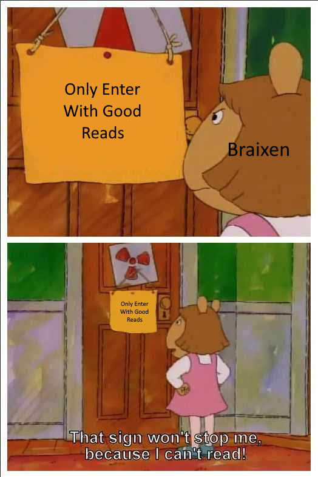

thats the problem
you’re too insane
free will is a myth
religion is all a joke
we are all pawns controlled by something greater
memes, the DNA of the soul
we’re going to be making metal gear rising memes for a while

Okay now goodnight.
nappy rokugan/icecream
ICecream
So like overall nappy is much more analytical and questioning. He asks people more meanngfull questions much more often than Im seeing from scum Nappy. Also another thing I noticed is general read confidence. From what I saw, Nappy isnt generally as confident in their reads, especially early as Im seeing from them now
derps who do you want italy to peek
Im done now that was a lot of work
Wiisp
| Person | Who they want checked |
|---|---|
| katze | katze or Arete |
| Arete | Arete |
| Marshal | Arete |
| Napoleon | katze |
| sulit | sulit |
| Braixen | Arete |
| Italy | Literally anyone so you get no votes cause im not writing 1 for everything |
| Wazza | DryBones, Apprentice, katze |
| Derps | Wiisp |
| Votee | Total Votes |
|---|---|
| katze | 4 |
| Arete | 4 |
| Marshal | 1 |
| sulit | 1 |
| DryBones | 1 |
| Apprentice | 1 |
| Wiisp | 1 |
also alice whenever you’re done writing your post i’d like you to cast a vote too
Actually I re-analyzed it yesterday, and about three people unvoted Apprentice because they didn’t want him to quickhammer then I did it as his wagon grew a bit too fast for an EoD wagon.
After that we basically just forgot about him and went to Jgoes/Appel/Derps.
And I’m reading the thread rn.
alice
you’re greenchecked
shade yourself, town
wait i think i fucked it up
You. I’m pretty sure that Arete is town as I see no agenda in his reads, he’s mindmelding a lot with me, and then we have Italy’s soft-green check on him. I still have you on my null portion as nothing that I’ve seen pings me either way.
I just put in like an hour and a half into reading nappy who do I do this to myself
only to be ignored or simply said my reads bad
its okay derps i uh
ill read it later okay
I dont belive you
and the years start coming and they don’t stop coming
fed to the rules and i hit the ground running
| Person | Who they want checked |
|---|---|
| katze | katze or Arete |
| Arete | Arete |
| Marshal | Arete |
| Napoleon | katze |
| sulit | sulit |
| Braixen | Arete |
| Italy | Literally anyone so you get no votes cause im not writing 1 for everything |
| Wazza | DryBones, Apprentice, katze |
| Derps | Wiisp |
| Alice | katze |
| Votee | Total Votes |
|---|---|
| katze | 5 |
| Arete | 4 |
| Marshal | 1 |
| sulit | 1 |
| DryBones | 1 |
| Apprentice | 1 |
| Wiisp | 1 |
honestly if im doing all this work and italy is fucking scum im gonna give him so much shit postgame